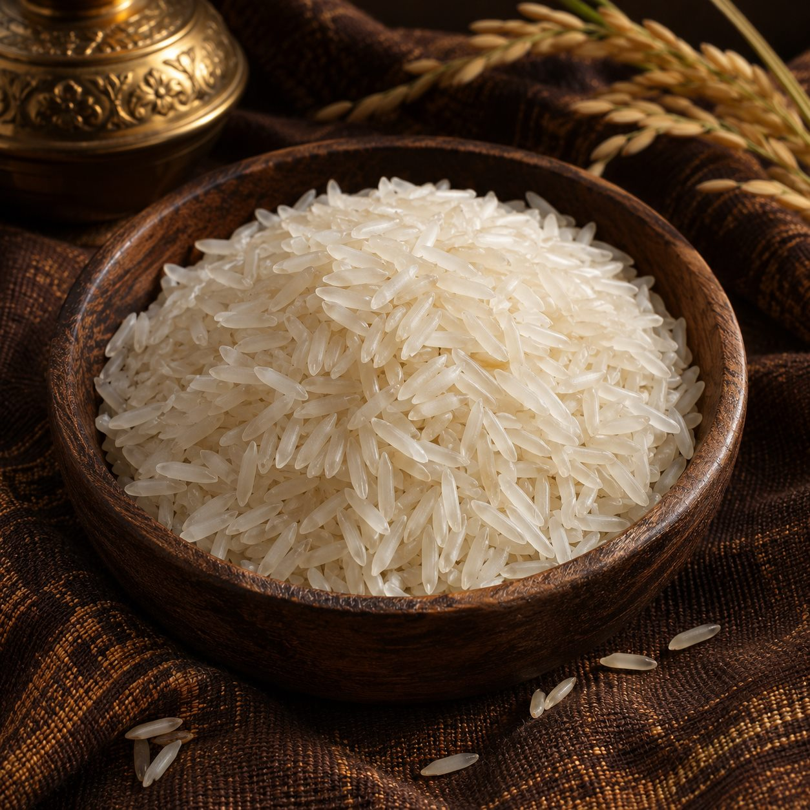
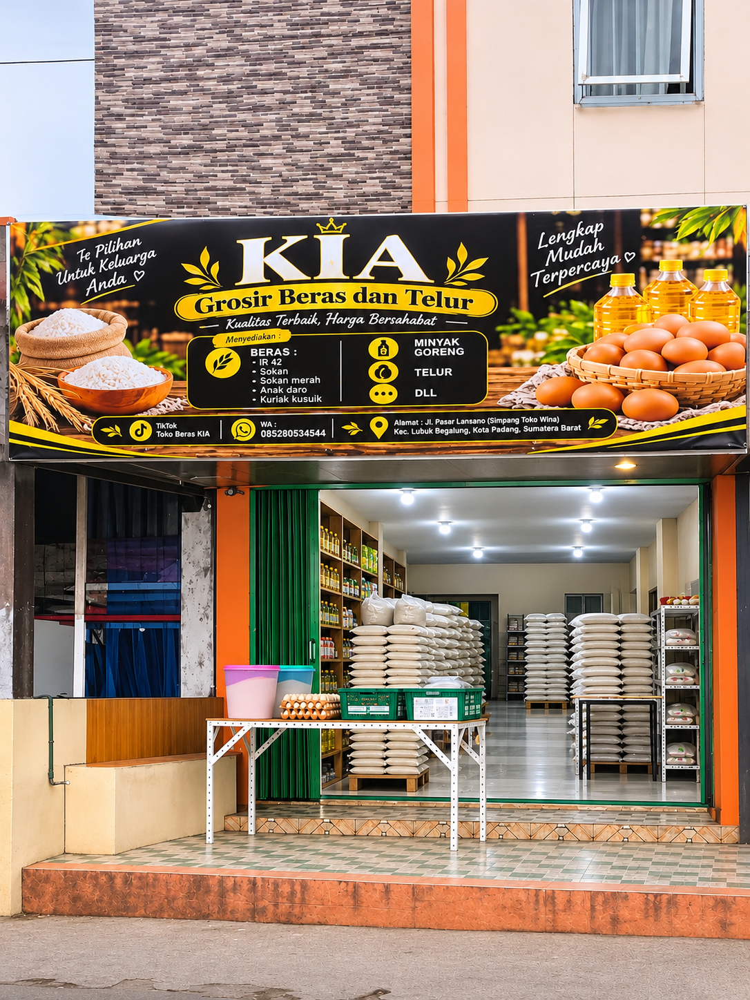

Beras pilihanRagam jenis untuk kebutuhan Anda
BERAS & SEMBAKO PILIHAN
Bekal terbaik,
untuk setiap meja makan.
Dari beras pilihan hingga kebutuhan dapur harian. Toko Beras KIA siap melayani keluarga dan usaha Anda, dengan pilihan lengkap dan layanan yang terasa dekat.
Melayani eceran & grosir
Pengiriman tersedia
Pengiriman tersedia

KEBAIKAN DARI SAWAHUntuk kebutuhan setiap hari

BERAS • TELUR • SEMBAKO— MELAYANI KELUARGA & USAHA
Harga bersahabatNilai baik untuk belanja harian
Siap grosirMelayani rumah tangga & usaha
Antar pesananTanyakan jangkauan pengiriman
DARI DAPUR KIA
Belanja baik,
dimulai dari sini.
Kebutuhan pokok yang akrab di dapur, tersedia dalam pilihan untuk belanja harian maupun usaha.

Sembako
lengkap.
Perlu kebutuhan lain? Kami siap membantu mencarikan pilihan.
Tanya ketersediaan ↗Harga dan stok dapat ditanyakan langsung kepada tim KIA.

DEKAT • LENGKAP • BERSAHABATCERITA KIA
Lebih dekat dengan
kebutuhan harian.
Toko Beras KIA hadir untuk membantu keluarga dan pelaku usaha memenuhi kebutuhan pokok dengan lebih mudah. Pilih beras favorit, lengkapi kebutuhan dapur, lalu hubungi kami untuk informasi stok dan pesanan.
Kami melayani pembelian langsung, pesanan grosir, dan pengiriman sesuai area layanan.
Kenali layanan kami →LAYANAN KIA
Belanja lebih
mudah, setiap hari.
Pilih cara berbelanja yang sesuai dengan kebutuhan rumah dan usaha Anda.

Beli Beras Langsung di Toko
Datang langsung ke Toko Beras KIA untuk memilih beras sesuai kebutuhan Anda.

Pesan Sekarang, Kami Antar ke Rumah
Pesan beras dari rumah dan kami antarkan langsung ke alamat Anda.
Maksimal jarak pengantaran 4 km dari toko.

Pesan Banyak, Kami Gilingkan dan Antar Terjadwal
Layanan pesanan beras dalam jumlah besar dengan proses penggilingan dan pengantaran sesuai jadwal yang disepakati.
Minimal pesanan 50 kg.